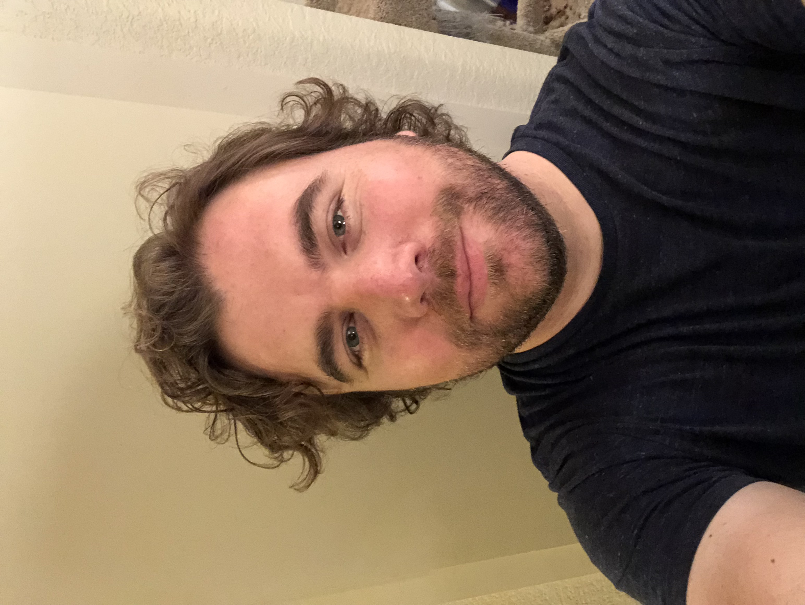

About Me

I'm a creative indiviidual who loves computers, music, movies, driving on 4 and 2 wheeled vehicles and animals, amongst many other things. I was born in Sacramento and am currently living in Folsom with my girlfriend, and our dog and cat.
I first got into HTML and front end web design around the year 2000, when I designed and maintained the website for my band at the time; Speeding in the Rain. The website can still be seen on the internet archive and I have to admit, it wasn't too bad (even without any CSS)!
I have had many jobs, from working technical support for Apple to selling smartphones, to running my own shops online selling products featuring graphic design work I have made. I'm currently learning more about full stack web development and hope to get my career started in this field soon!